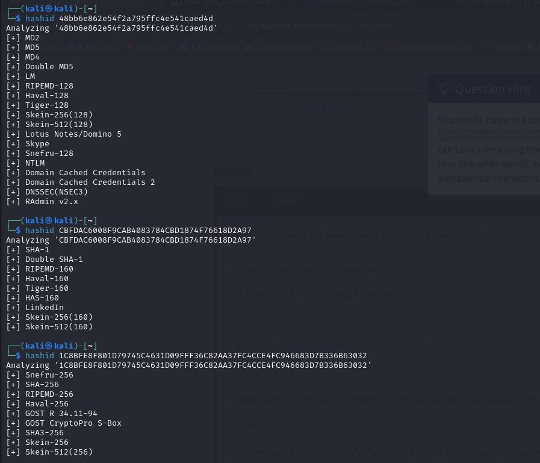

RootMe oraz Crack the hash
2024-02-17
Pierwszym CTF był RootMe, na starcie zacząłem od zebrania informacji pierwsz ogólniej a potem bardziej szczegołow za pomocą nmapa
Następnie postępując zgodnie z pytaniami w ctf szukałem podejrzanej podstrony narzędziem gobuster
Okazało się że jest podstrona w której można uplodować własny plik dlatego postanowiłem wstrzyknąć kod php revers shell, jest to ten sam kod który już używałem w poprzednich rozwiązaniach.
Po udanym zalogowaniu się do zdalnego terminala udało się też znaleść flage do której potrzebowałem komendy find
Do następnej flagi potrzebne były uprawnienia roota, z pomocą podpowiedzi dowiedziałem się że pomocny w tym będzie python

Z pomocą storny internetowej: https://gtfobins.github.io/gtfobins/python/ udało się za pomocą pythona uzyskać uprawnienia roota i zdobyć 2 flagę.

Źródło: https://tryhackme.com/room/rrootme
Drugi CTF był skupiony w 100% na kryptgrami, moje rozwiązanie nie będzie przedstawiać 100% rozwiązania, na początku było kilka różnych zaszyforwanych wiadomości ktróre rozpoznawałem za pomoca narzędzie przedstawionego na zdjęciu poniżej, a deszyfrowałem za pomocą różnych przeglądarkowych aplikacji.
Pierwsze użycie hashcata padło przy algorytmie Blowfish, w komendzie po -m należy podać numer który możemy znaleść na stronie https://hashcat.net/wiki/doku.php?id=example_hashes.
Utorzyłem także plik w którym przekierwowałem hasła o odpowiednije składni i długości z pliku rockyou.
Następny hash udało sie rozpoznać i znaleść przez charakterystyczny początek $6$, był to algorytm SHA512.
W tym przypadku numer w paramaetrze -m wynosi 1800
Ostatnim hashem przy którego wykryciu pomogła mi podpowiedź był HMCA-SHA1, postępowanie jest analogiczne jak poprzednie jedyna różnia że tym razem plikiem którey był używany do łamania był bezpośrednio plik rockyou.
Źródło: https://tryhackme.com/room/crackthehash